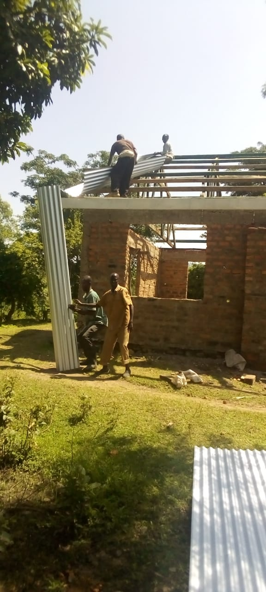

WELCOME TO OUR CHURCH
MASENO SOUTH DIOCESE
WELCOME TO ACK OKOYO CHURCH
A Christ-centred family serving God and community.
“God loves a cheerful giver.”
— 2 Corinthians 9:7
Worship • Fellowship • Service • Community
📍
Location
Oluti Village, Seme Constituency
⛪
Diocese
Maseno South Diocese
🕊️
Worship
Sunday services & weekly fellowship
💚
Give
PayBill 247247 • Account 291900
LIFE AT ACK OKOYO
Faith in Action
A church family growing together through worship, prayer, fellowship, service and community.

WHO WE ARE
A church family rooted in Christ
Welcome to ACK Okoyo Church. We exist to worship God, grow disciples, care for one another and serve our community.
✝
Our Mission
To proclaim Christ, nurture faithful disciples and serve our community.
👁
Our Vision
A growing, united and Christ-centred church transforming lives.
🤝
Our Values
Faith • Love • Integrity • Service • Unity • Compassion • Hope
Prayer
Seeking God's guidance together.
God's Word
Growing through Scripture and teaching.
Love
Caring for one another and our neighbours.
Service
Using our gifts to serve God and community.
“I was glad when they said unto me, Let us go into the house of the LORD.”
Psalm 122:1
✝
Faith
🙏
Prayer
❤️
Fellowship
🤝
Service
WORSHIP WITH US
Order of Service
The latest published service programme appears here. Church leaders can update it from the admin dashboard.
CHURCH LIFE
Worship & Fellowship
Stay connected with the life of the church.
Sunday Worship
Come together for worship, prayer, teaching and fellowship.
Bible Fellowship
Growing deeper in God's Word and faith.
Prayer & Outreach
Seeking God and reaching out to our community.
Family Fellowship
Building strong Christian families and relationships.
OUR STORY
History of ACK Okoyo Church
The History of Seme and Our Community
The story of Seme is a rich history of ancestry, migration, settlement, family, friendship, marriage and community. Over generations, different families and communities travelled, settled and became connected to one another.
Kagumba and Kadipir
Traditional history associates two major ancestral groupings with Seme: Kagumba and Kadipir. The traditional genealogy traces these groupings to the wider family of Odongo, Gumba and Dipir.
Migration and Settlement
The movement of families across different parts of the region played an important role in shaping Seme. Different families arrived through different routes and became part of the wider community through settlement, family relationships, friendship and marriage.
A Community of Many Histories
The history of Seme is therefore a story of many journeys. Different families and communities contributed to the rich cultural heritage of the area.
Our Heritage
ACK Okoyo Church is part of this wider community heritage. As a church family, we recognise the importance of remembering our history, respecting our communities and building a future founded on faith, love, unity and service.
Anglican identity
Part of the Anglican Church of Kenya and the wider Diocese of Maseno South.
Community & fellowship
A place for worship, Christian formation, prayer and service in Oluti Village.
Building for the future
The church continues to develop its facilities and strengthen ministry for future generations.
GET INVOLVED
Ministries & fellowship
Use this space to showcase the groups and ministries active in the parish.
Family Ministry
Strengthening Christian homes and relationships.
Youth
Faith, mentorship, leadership and fellowship for young people.
Children
Helping children know and love Christ.
Prayer & Outreach
Prayer, evangelism and practical service to the community.
Let us pray together
Whether you are celebrating a blessing, facing a challenge or simply seeking God's presence, prayer connects us as a church family.
You can use the contact section below to send a prayer request.
Send Prayer Request
🕊️
“Be still, and know that I am God.”
Psalm 46:10
PICTURIALS
Church gallery
Moments from worship, ministry, building and church life.
GIVE WITH FAITH
Tithes, offerings & thanksgiving
Your giving supports worship, ministry, outreach and church development.
M-PESA
CHURCH PAYBILL
247247
ACCOUNT NUMBER
291900
On M-Pesa: Lipa na M-Pesa → Pay Bill → 247247 → Account 291900 . Keep your M-Pesa confirmation message as your receipt.
CONNECT
Contact & visit us
Have a prayer request, ministry question or church announcement? Send a message.
📍
ACK Okoyo Church
Oluti Village
Seme Constituency
Kisumu County, Kenya